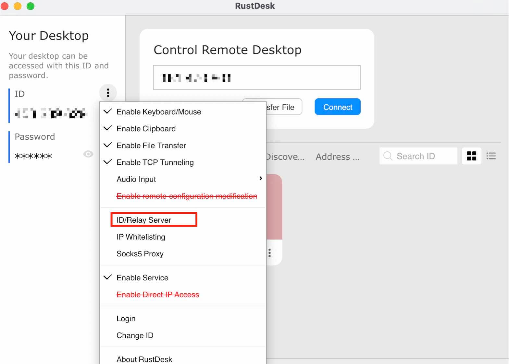
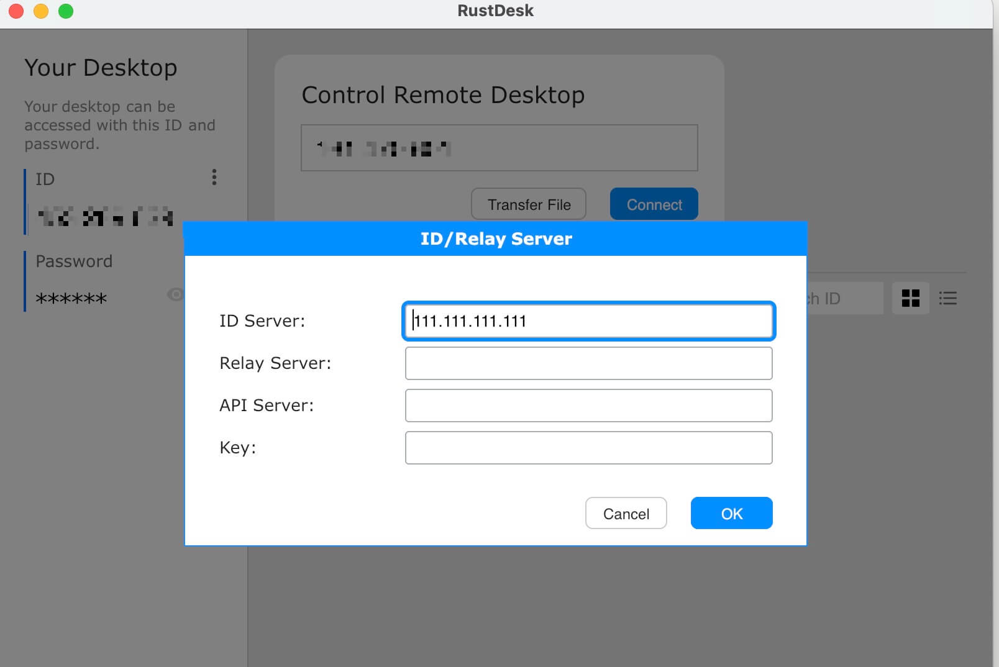

这篇文章上次修改于 209 天前，可能其部分内容已经发生变化，如有疑问可询问作者。
RustDesk 是一款开源的跨平台远程桌面软件，类似于 TeamViewer 的 UI 样式，但它是完全免费的。
RustDesk 提供了 3 个免费的转发服务器，会根据你的地理位置自动选择最快的，一般使用足够了，如果对安全性有担忧，它们也提供了 server 端应用，可以自建转发服务器。下面就对搭建 server 端做一些介绍。
RustDesk GitHub 主页：https://github.com/rustdesk/rustdesk
RustDesk Server GitHub 主页：https://github.com/rustdesk/rustdesk-server
服务器平台：ubuntu 20.04
安装 server
我是通过 docker 安装的 server 端，这样最快速简单。
关于 docker 和 docker compose 的安装可以参考我之前的文章：https://blog.niekun.net/archives/2742.html#title-1
docker-compose.yml 文件内容如下：
version: '3'
networks:
rustdesk-net:
external: false
services:
hbbs:
container_name: hbbs
ports:
- 21115:21115
- 21116:21116
- 21116:21116/udp
- 21118:21118
image: rustdesk/rustdesk-server:latest
command: hbbs -r xxx.xxx.xxx.xxx:21117
volumes:
- ./data:/root
networks:
- rustdesk-net
depends_on:
- hbbr
restart: unless-stopped
hbbr:
container_name: hbbr
ports:
- 21117:21117
- 21119:21119
image: rustdesk/rustdesk-server:latest
command: hbbr
volumes:
- ./data:/root
networks:
- rustdesk-net
restart: unless-stopped这里配置 hbbs IP 地址需要设置为中继服务器的 IP 或域名，否则无法链接。默认监听的是 21117 端口，客户端默认也是链接服务器的这个端口。如果修改这里的默认端口，则在客户端设置的时候也需要指定此端口。
启动服务：
docker-compose up -d
此时在客户端设置 ID server：

在第一行填入服务器 IP 地址即可：

确认后，如果下方状态栏显示 ready 表示服务器链接正常：
配置域名访问
如果想要使用域名作为 server id，需要在你的域名服务器里加上一条自定义的域名 NS 解析，如：rust.abc.com。
注意如果你使用的是 cloudflare 服务，由于它在启用 CDN 后只支持少数端口的转发，而我们需要使用的是 21115 - 21119 这些端口，所以需要在 dns 配置时取消这个自定义域名的小黄云，只使用其 dns 服务：
关于 cloudflare 的网络端口转发相关的信息参考官网内容：Network ports
自定义域名配置好后，修改 docker-compose.yml 配置文件中定义的地址为指定域名：
command: hbbs -r rust.abc.com:21117
重启容器后就可以在客户端的 ID server 中使用域名链接了。方法和上面介绍的用服务器 IP 设置的方法相同。
没有评论